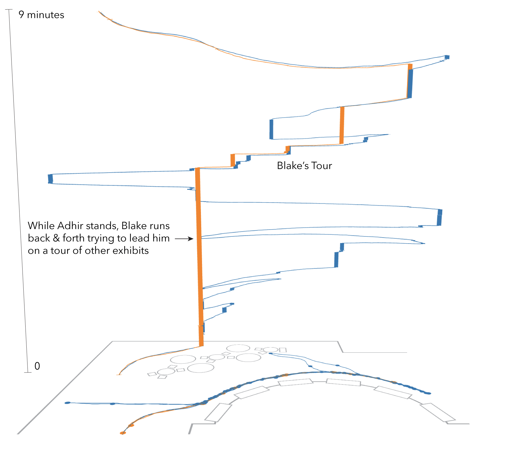

Figure 3. Annotated screenshot from the IGS showing the movement of Adhir and six-year-old Blake over space and space-time as they visit this gallery space together. As Adhir stands at the Hank Williams exhibit Blake is running back and forth across the gallery space trying to lead him on a tour of other exhibits. He is finally successful when their paths intertwine in the space-time view mid-way through their visit.
